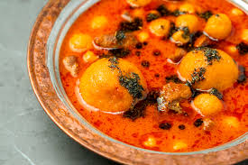
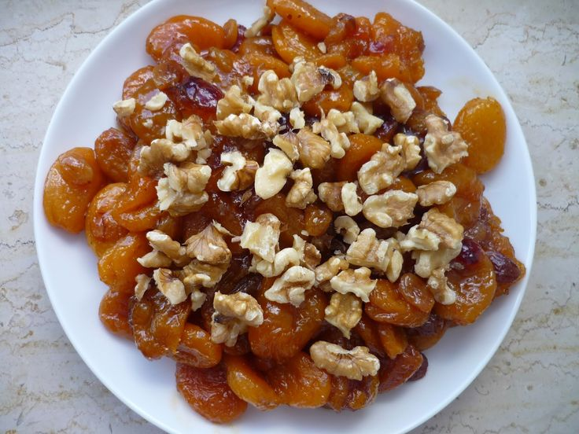
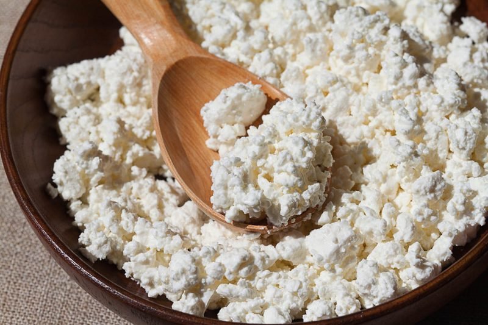
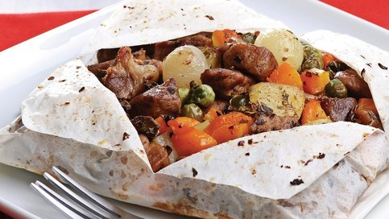
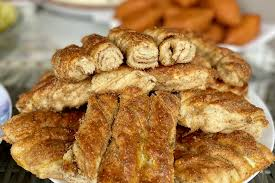
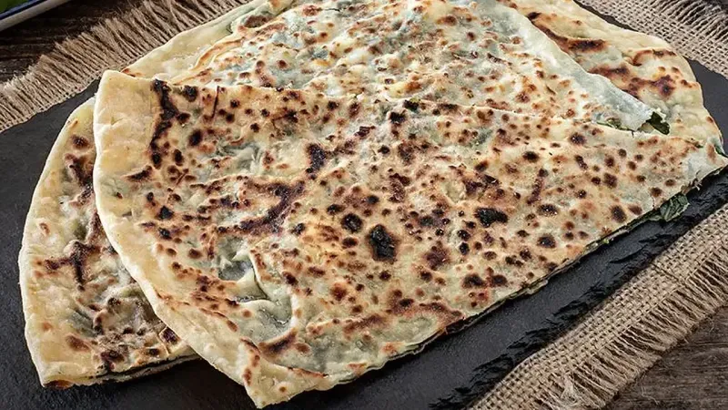
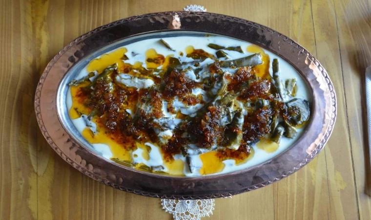

Traditional Foods of Malatya
| Dish Name | Description | Rating | Image |
|---|---|---|---|
| Analı Kızlı Köfte | Stuffed bulgur balls with meat | 4.8 |  |
| Served in yogurt sauce | |||
| Kayısı Kavurması - Sauteed apricots with walnut and butter | 4.6 |  | |
| Çökelek | Traditional soft cheese | 4.4 |  |
| İçli Köfte | Meat-filled bulgur balls | 4.7 | |
| Kömbe | Pastry with spiced walnut filling, traditionally baked | ||
| Kağıt Kebabı | Paper-wrapped oven kebab | 4.5 |  |
| Haşhaşlı Ekmek | Bread with poppy seed paste | 4.2 |  |
| Patila | Stuffed flatbread | 4.6 |  |
| Kiraz Yaprağı Sarması | Rice and bulgur wrapped in cherry leaves, served with yogurt |  | |
The Story of Malatya Cuisine


Malatya cuisine has a deep-rooted history dating back to ancient Anatolian civilizations. With its fertile lands and strategic location, the region has developed a diverse food culture based on grains, fruits, and meats. Dishes like Analı Kızlı Köfte and Kayısı Tatlısı reflect both Ottoman and regional rural influences.
The use of apricots in both sweet and savory dishes makes Malatya unique. The local population preserved food traditions for generations, using natural fermentation and stone ovens. Today, many of these recipes are proudly passed down and served at family gatherings, weddings, and festivals.
Additionally, Malatya’s culinary tradition shines through its hearty stews and bread varieties, often baked in traditional clay ovens. These dishes are complemented by locally grown herbs and spices, adding depth to every bite. This rich heritage continues to evolve, blending old recipes with modern techniques to delight both locals and visitors.